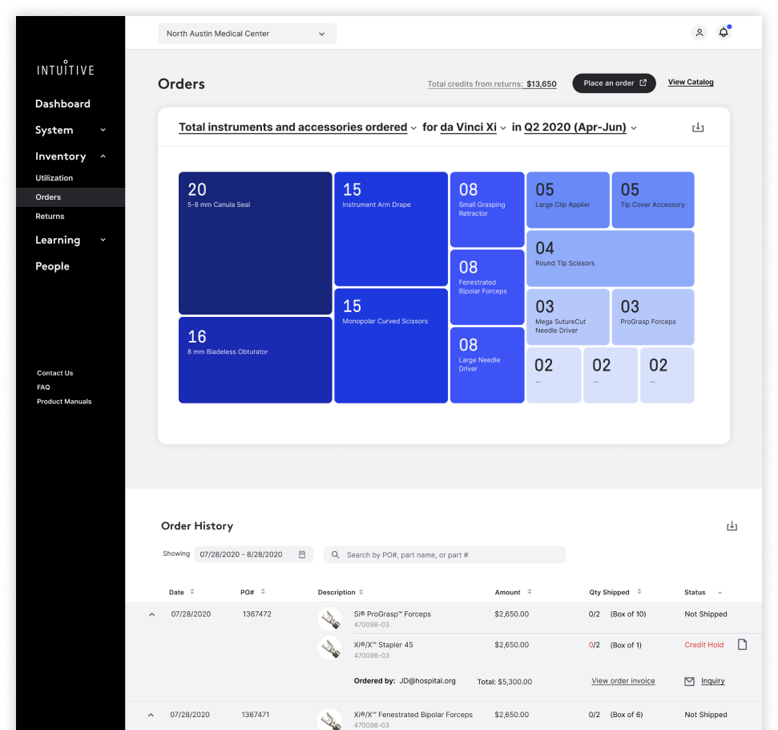
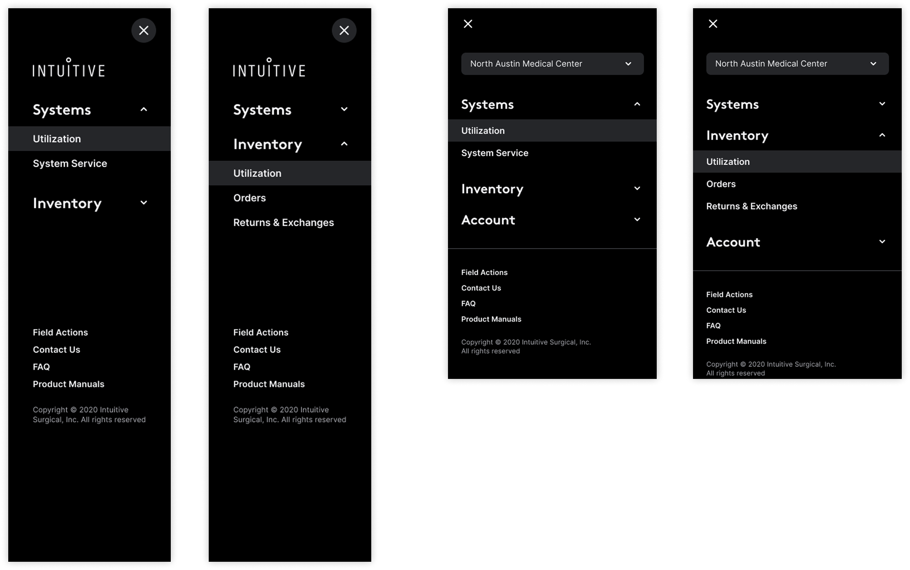
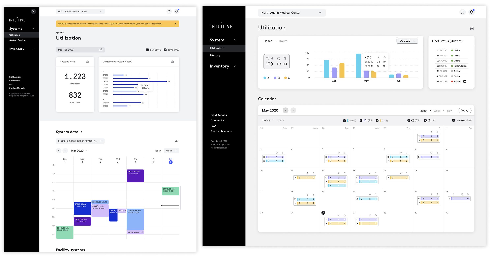
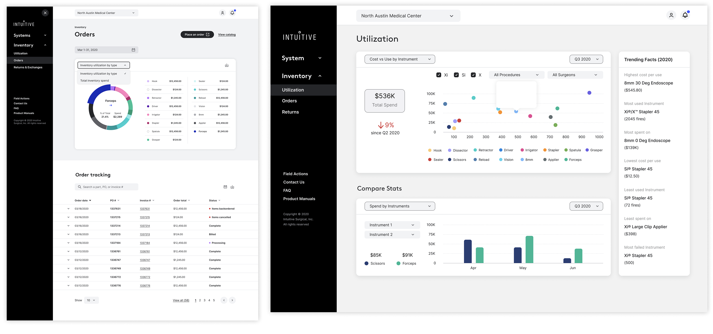
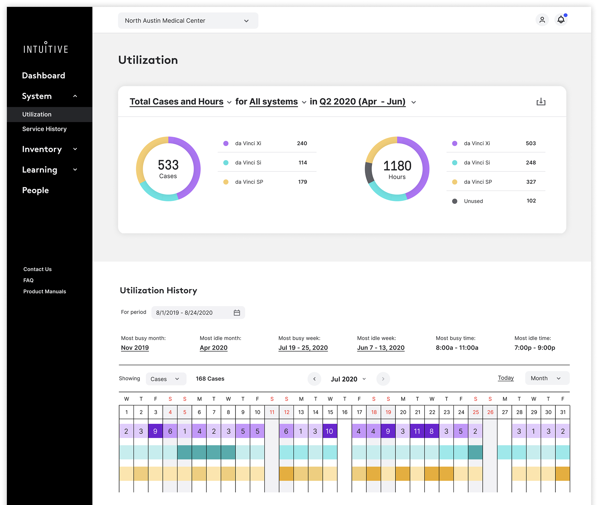
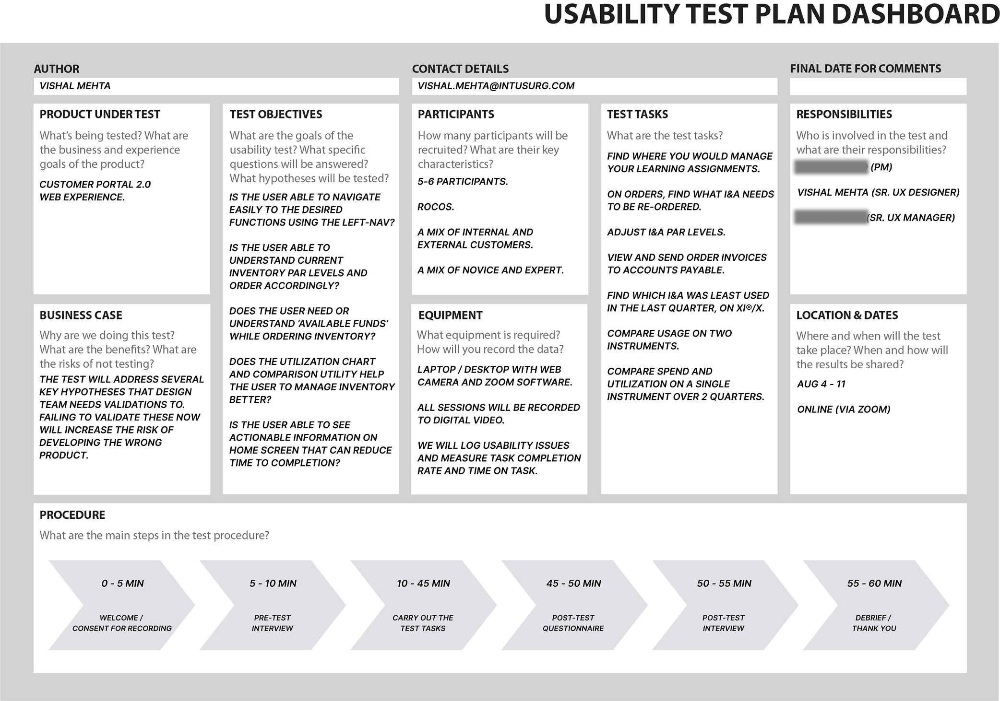
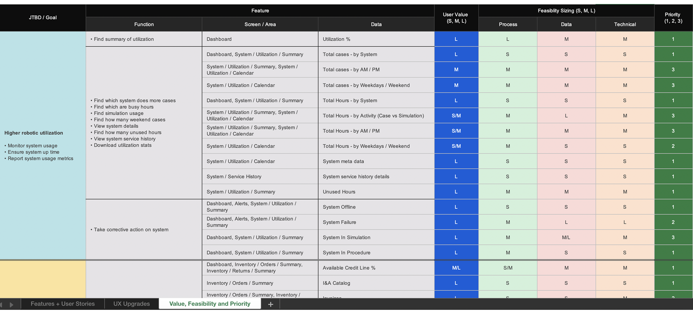

Transforming how hospital nurses manage robotic surgical inventory — from frustration to clarity, through data visualization designed for high-stakes decisions.
Hospital nurses managing Intuitive Surgical's da Vinci robotic systems were running operating rooms with a portal built in 2016 — before the complexity of robotic surgery programs had fully materialized. The result was a compounding failure across every core workflow.
The deeper problem: nurses weren't just inconvenienced. They were making inventory ordering decisions without reliable data — in an environment where equipment availability directly impacts surgical outcomes.
Observed nurses in their actual workflow — not in a lab. Understanding the decision they needed to make (when and how much to order) shaped every design decision that followed.
Designed novel tree map and matrix chart visualizations that surfaced utilization patterns in a single glance. The goal was to turn complex inventory data into an immediately actionable insight — not a table to be analyzed.
The 2016 architecture was built around data structure, not user goals. Rebuilt navigation around the three things nurses actually needed to do: check utilization, place orders, and resolve exceptions.
Inventory returns had a 70% error rate due to ambiguous workflows. Redesigned with progressive disclosure and inline validation — making the correct path the obvious path.

Orders — treemap visualization showing instrument usage at a glance. The size of each cell encodes quantity, so nurses see what needs reordering without reading a table

Navigation redesign — four states from the ground up. Old portal buried functions 3 levels deep; new architecture surfaces the three things nurses actually do: check utilization, place orders, resolve exceptions

Utilization dashboard — cases, hours, fleet status, and a surgical calendar in one view. Designed across breakpoints; OR nurses move between desktop and tablet during shift

Inventory utilization — cost vs. use scatter plot lets administrators identify over-ordered instruments instantly. Compare Stats enables side-by-side instrument benchmarking across quarters

System utilization summary — 533 cases and 1,180 hours broken down by Xi, Si, and SP. History calendar gives program coordinators a month-level pattern view for capacity planning
Every design decision traced back to a testable hypothesis. Before any high-fidelity work began, a structured usability test plan mapped what we needed to learn, who we'd test with, and how we'd measure success.

Usability Test Plan — structured across 5–6 ROCOS participants (mixed novice/expert), 60-minute moderated sessions on Zoom, with 8 defined task scenarios covering navigation, ordering, and utilization interpretation

Value × Feasibility × Priority matrix — every feature mapped to a JTBD goal, scored for user value (S/M/L) and feasibility across process, data, and technical dimensions. This became the roadmap prioritization artifact shared with PM and engineering
Nurses were comfortable with spreadsheet-style order history. The safe path was to keep that pattern and clean up the UI. Instead we introduced a treemap as the primary ordering view — encoding quantity in cell size so the reorder signal was immediate, not derived.
The tradeoff was a steeper learning curve on first use. The return: nurses reported understanding their instrument usage at a glance for the first time. Usability testing validated the pattern held — task completion on ordering scenarios improved significantly over the baseline.
The original architecture was organized around data objects: instruments, systems, orders, returns — each a separate silo. Logical from an engineering perspective, but it forced nurses to context-switch constantly to complete a single workflow.
We restructured around jobs-to-be-done: manage utilization, manage inventory, manage your account. The tradeoff was breaking established muscle memory for power users. The gain: users who previously navigated 3–4 levels deep to reach core functions reached them in one step.
Research synthesis, usability testing sessions, visualization design decisions, and the engineering collaboration story are available in a private walkthrough.
Request a Walkthrough →